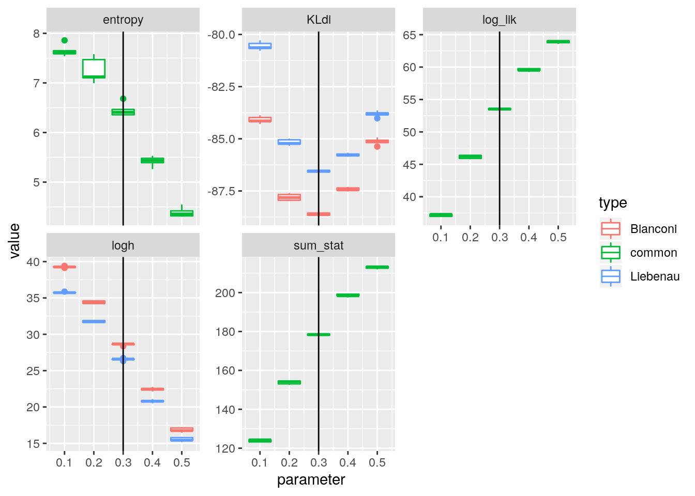

set.seed(1)
library(StartNetwork)
library(parallel)
library(ggplot2)
n = 12
replicates = 400
datapoints = 5
mech_net_gwdegree <- purrr::partial(sim_ergm_altkstar, n = !!n)theta_s <- 0.5
theta_p <- rep(seq(0.3, 0.7, by = 0.1), datapoints)
cl <- parallel::makeCluster(parallel::detectCores())
g <- parallel::parLapply(cl, theta_p, StartNetwork::KL_ss, theta_s = theta_s, replicates = replicates, sorted = TRUE, mech_net = mech_net_gwdegree, lstat = function(x){as.numeric(ergm::summary_formula(x ~ altkstar(log(10), fixed = TRUE)))}, mirror = TRUE, type = c("Bianconi", "Liebenau"), ergm = TRUE)
parallel::stopCluster(cl)g_tidy <- StartNetwork::tidy_g(g)
ggplot(g_tidy) + aes(x = parameter, y = value, group = interaction(parameter, type), col = type) + geom_boxplot(outlier.shape = NULL, position = "identity") + facet_wrap( ~ key, scales = "free_y") +
ggplot2::geom_vline(mapping = aes(xintercept = theta_s))theta_s <- 0.4
theta_p <- rep(seq(0.2, 0.6, by = 0.1), datapoints)
cl <- parallel::makeCluster(parallel::detectCores())
g <- parallel::parLapply(cl, theta_p, StartNetwork::KL_ss, theta_s = theta_s, replicates = replicates, sorted = TRUE, mech_net = mech_net_gwdegree, lstat = function(x){as.numeric(ergm::summary_formula(x ~ altkstar(log(10), fixed = TRUE)))}, mirror = TRUE, type = c("Bianconi", "Liebenau"), ergm = TRUE)
parallel::stopCluster(cl)g_tidy <- StartNetwork::tidy_g(g)
ggplot(g_tidy) + aes(x = parameter, y = value, group = interaction(parameter, type), col = type) + geom_boxplot(outlier.shape = NULL, position = "identity") + facet_wrap( ~ key, scales = "free_y") +
ggplot2::geom_vline(mapping = aes(xintercept = theta_s))theta_s <- 0.3
theta_p <- rep(seq(0.1, 0.5, by = 0.1), datapoints)
cl <- parallel::makeCluster(parallel::detectCores())
g <- parallel::parLapply(cl, theta_p, StartNetwork::KL_ss, theta_s = theta_s, replicates = replicates, sorted = TRUE, mech_net = mech_net_gwdegree, lstat = function(x){as.numeric(ergm::summary_formula(x ~ altkstar(log(10), fixed = TRUE)))}, mirror = TRUE, type = c("Bianconi", "Liebenau"), ergm = TRUE)
parallel::stopCluster(cl)g_tidy <- StartNetwork::tidy_g(g)
ggplot(g_tidy) + aes(x = parameter, y = value, group = interaction(parameter, type), col = type) + geom_boxplot(outlier.shape = NULL, position = "identity") + facet_wrap( ~ key, scales = "free_y") +
ggplot2::geom_vline(mapping = aes(xintercept = theta_s))